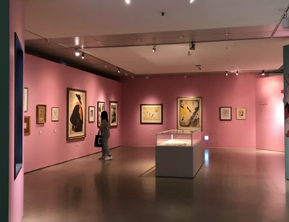
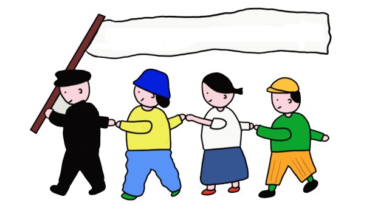

NTF 아트마켓
NTF 아트마켓는 신진 작가분들의 작품을 커뮤니티를 통해 홍보하며 작품을 NFT로 발행해서 콜렉터들에게 판매 됩니다.
NFT 작품들은 메타버스 및 오프라인에서 전시 및 홍보 됩니다.
NTF 아트마켓의 첫번째 프로젝트 이름은 [Memory] 입니다.
[Memory]컨셉은 작가분들의 작품이 탄생하기 까지 옛 추억을 마음에 품고 만든 작품 이야기입니다.
작품에 대한 자세한 내용은 작가님 영상 인터뷰를 보시기 바랍니다.
커뮤니티를 통해 창의적이고 실험적인 예술가들을 위한 장을 만들고,
앞으로 여러 분야의 작가님들과 협업하겠습니다.
[Memory] 오픈 일 예정은 2022년 2월 25일 13시 입니다.
[memory]
"개조심" - 바둑이
어릴 적 키우던 바둑이가 학교를 다녀오니 사라졌다.
몇일뒤 바둑이는 얼굴이 뭉개진 채 집으로 돌아왔다.
지금도 이학재작가에 가슴속 깊은곳에 자리잡은
깊은 오래된 슬픔
[Memory]
이를 그림으로 단순하게 담담하게 녹여낸 작품
이학재 작가 / 회화 / 작품명 개조심 시리즈- 36작품
"쎄봉, 루이, 이바" - 고양이
붉은 고양이 쎄봉, 녹색 루이, 파란 체크 이바
길에서 만난
길고양이
과
소소한 추억
[Memory]
Mrs.쭈 본인(자화상)과의 만남의 이야기를 나타낸 작품
변주현 작가 / 회화 공예 / 고양이 시리즈 -11작품
[전시]

☞ 메타버스 전시
메타버스에서 작품 감상하기
메타버스에서 작가와의 만남(추후공지)
<추후>

☞ 오프라인 전시
☞ 굿즈판매
☞ 원본 작품 판매
☞ 커뮤니티 오프라인 모임
☞ 자선파티
☞ 드로잉 키트
;
[참여]
<추후>

☞ 커뮤니티 봉사 활동 -> 연탄 나르기, 한강 쓰레기 줍기, 플라스틱 줄이기 캠페인
☞ 작가 및 프로젝트팀 환경관련 전시 참여
'
[관계]
<추후>

☞ "막대기 인간 관계의 네트워크와 신규 가입이며, 네트워크, 벡터, 사람들 태그를 포함.
DragonTiger 아티스트 작품처럼 실무에 연결
☞ 커뮤니티 활성화를 위한 아이디어 창출
☞ 작가님들과 실무자들의 소통 관계 연구 및 작가님들과 구매자와의 소통
[sns]

YouTube 채널 활용 ex) YangD TV:
NFT 작가 소개 인터뷰 및 작품 히스토리
작가와 8시 데이트
작가와 함께하는 드로잉 시간 (키트꾸리기)

작가분들의 개인 소통구간
라방
https://blog.naver.com/bellmin607 홍보 블로그 오픈
- 양디 2022
Mandalart

앞으로
장르에 구애받지 않고 작가 모집
디지털아트의 가치 있는 변화를 만들어 갈 작품 공모
복사 불가능한 디지털 작품과 원본으로 존재한 작품-페어링 형태의 아트
오픈된 마켓 플레이스에 소비자들과 작가와의 만남
작가의 히스토리 창작성과 인지도 높이기
멘탈잡기

☞ 불필요한 감정 미술치료 상담
☞ 작가님들 우울증 검사
☞ 소통 원할히 하기
☞ 존중하기
"좋아하는 일을 오래 하려면, 아이러니하게도 조금 덜 좋아하는 마음이 꼭 필요하다. 두 가지의 나 사이에서 적절한 밀당은 삶을 지탱할 근력을 만든다. 삶을 지탱할 근력은 결국 일을 오랫동안 즐겁게 할 수 있는 힘이 된다."
"대단한 무언가를 해야만 '일꾼의 운명'을 바꿀 수 있다고 생각했다. 내가 하고 싶은 일을 하는 것만으로도 자신감이 붙고, 그저 그런 일꾼의 삶에 작은 비상구가 생긴 기분이다. 혹시 아나. 그 비상구가 커지고 커져 나의 또 다른 일터 '정문'이 될지."
함께하는 연구소

- 아홉꼬리여우 연구소
연구진
진, 제이씨, 캡인, 해리
연구진 습성
끼니를 절대 거르지 않습니다.
과자를 좋아합니다.